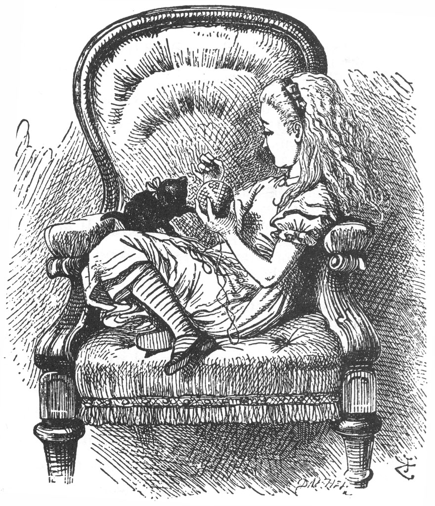
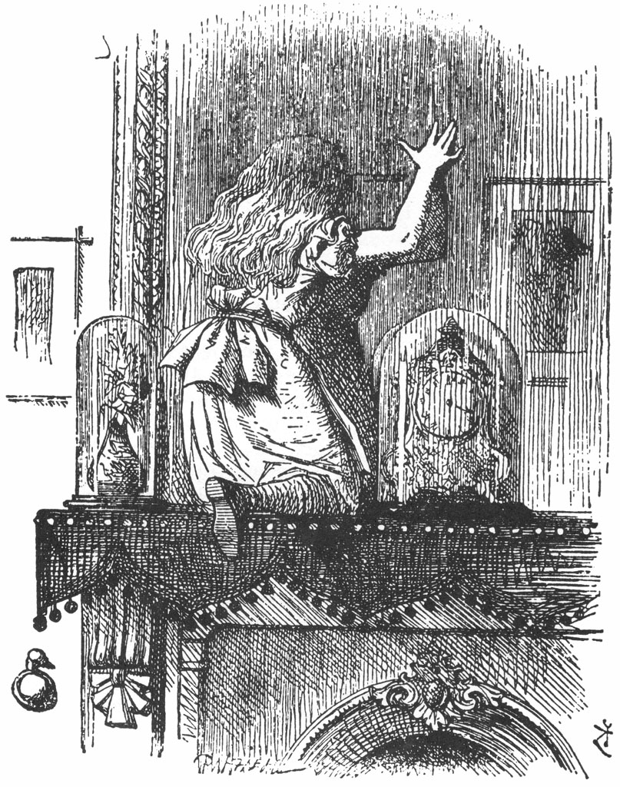
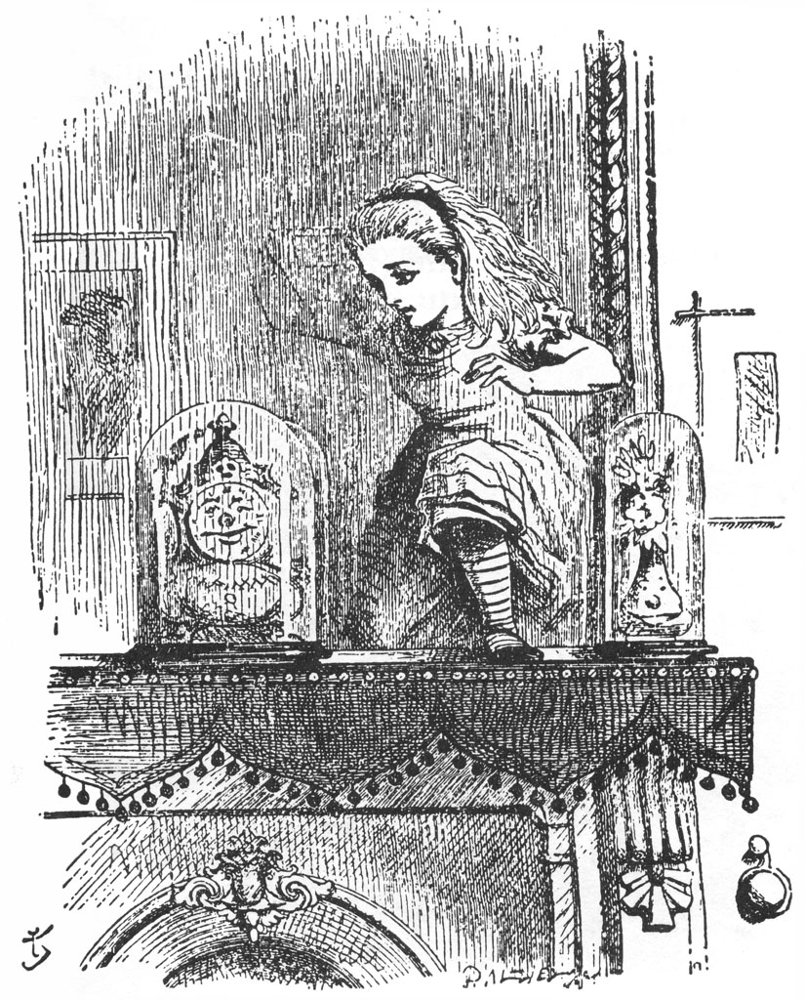
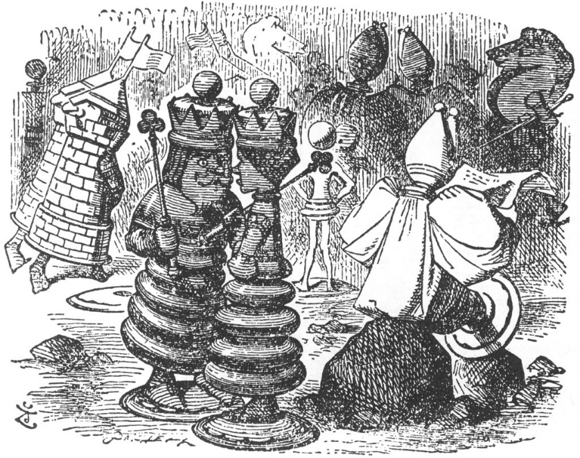
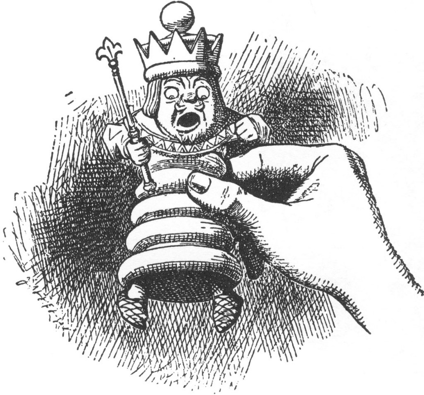
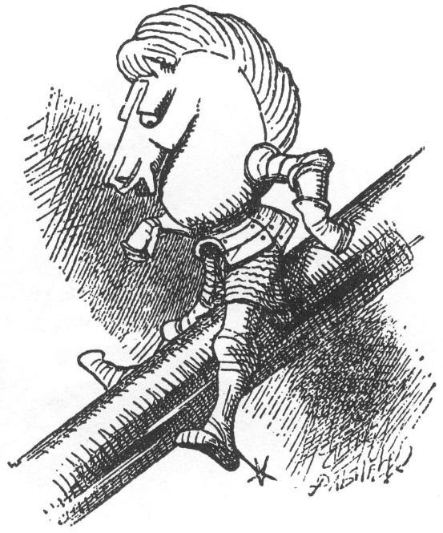
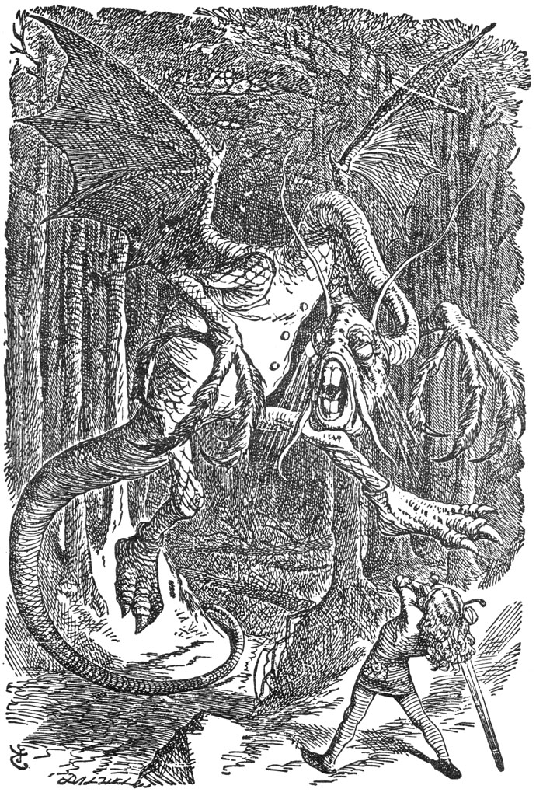

Kesin olan bir şey vardı ki; o da yavru beyaz kedinin bu işle bir ilgisi yoktu, ne varsa hepsi yavru kara kedinin başının altından çıkıyordu. Öyle ya, beyaz yavru son on beş dakikadır yaşlı kediye yüzünü yalatarak temizletiyordu (cüssesine göre buna iyi de dayanıyordu, hani); işte gördüğünüz gibi, beyaz kedinin bu yaramazlığın içinde olmasına imkân yoktu.
Dinah’ın yavrularının yüzlerini temizleyişine gelince: İlk önce, zavallı yavruyu bir patisiyle kulağından tutup yere yatırıyordu; ardından da diğer patisiyle tersten, burnundan başlayarak yüzünü baştan sona siliyordu; bu nedenle demin de dediğim gibi şu anda Dinah’ın beyaz yavrusuyla çetin bir işi vardı, yavru da kıpırdamak-sızın öylece uzanmış mırlamaya çalışıyordu... tabii ki bütün bunların kendi iyiliği için olduğunu biliyordu.
Ama yavru kara kedinin işi, ikindi vakti erkenden bitmişti; işte bu yüzden, Alice’in köşedeki büyük koltukta yarı uyuklayıp yarı kendi kendine konuşarak kıvrılıp oturduğu bir sırada, yavru kara kedi, Alice’in sarmak için onca uğraştığı yün yumağıyla, yani en sevdiği oyuncakla numaradan boğuşuyor, ordan oraya yuvarlıyordu, sonunda yumak tamamen çözülmüştü. İşte orada şömine önündeki kilimde kendi kuyruğunun peşinde koşuşturan yavrunun yanında bütün o düğüm ve dolaşıklıklar da ortalığa saçılmış haldeydi.
“Seni minik şeytan, seni!” diye haykırdı Alice, sonra da yavruyu yakalayıp bunun ayıp bir davranış olduğunu anlaması için ufacık bir öpücük kondurdu yanağına. “Aslında, Dinah’ın sana uslu durmayı öğretmesi gerekirdi! Dinah, bunu yapman gerekirdi, biliyorsun!” diye ekledi Alice yaşlı kediye dönüp sitemle, olabildiğince küsmüşçesine konuşarak... sonra da yavruyu ve yumağı yanına alarak tırmanıp yeniden koltuğa çıktı ve başladı yumağını tekrardan sarmaya. Ne ki kâh kendi kendisiyle kâh da yavru kediyle konuştuğundan pek hızlı değildi. Pisi, yumağı nasıl sardığını izliyor numarası yaparak ağırbaşlıca çıkıp Alice’in dizlerine oturdu, yer yer de tek patisini uzatıp usulca yumağa dokunuyordu, sanki elinden gelecek olsa yardım etmekten çok hoşlanacakmışçasına.
“Pisi, yarın ne biliyor musun?” diye konuşmaya başladı Alice. “Beraber üst katta camdan bakmış olsaydık, ne olduğunu tahmin edebilirdin... Ne yazık ki o zaman Dinah seni yalayıp temizliyordu. Camdan şenlik ateşi için odun toplayan oğlanlara bakıyordum... Bunun için bir sürü odun gerekiyor Pisi. Ama hava çok soğuktu, kar da öyle lapa lapa yağıyordu ki, çocuklar oradan ayrılmak zorunda kaldılar. Neyse, Pisi boş ver bunları. Yarın gidip şenlik ateşini birlikte görürüz.” İşte Alice tam bu sırada sırf nasıl göründüğünü merak ettiği için yumağın ipinden yavrunun boğazına iki üç kez doladı; bu da yeni bir itişip kakışmaya yol açtı, öyle ki yumak yeniden yere yuvarlandı ve metrelercesi tekrar açıldı.

“Biliyor musun, çok kızdım sana Pisi,” diye devam etti Alice, tekrar koltuğa yerleştiklerinde. “Bütün bu yaramazlıklarını görünce, neredeyse camı açıp seni dışarı karın içine atacaktım! Bunu hakediyordun üstelik, seni küçük sevimli yaramaz! Kendini nasıl savunacaksın bakalım?” Sonra da, “Beni rahatsız etme, artık!” diye devam etti, parmağını havaya kaldırıp sallayarak. “Bütün yaptıklarını bir bir sıralayayım sana şimdi. Birincisi: Bu sabah, Dinah yüzünü temizlediği sırada iki kez ciyakladın. Bunu inkâr edemezsin, kendi kulağımla duydum! Buna ne diyorsun?” (Yavru kedi sanki konuşuyormuş gibi ona cevap vererek) “Patisi gözüne mi girdi? Peki, ama gözünü kapamadığın için bu da senin hatan... Gözlerini sıkı sıkı yummuş olsaydın, bu başına gelmezdi. Tamam, şimdi daha başka özürler bulma da, beni dinle! İkincisi: Ben, tam Kar Tanesi’nin önüne süt kâsesini koyduğum sırada, onu kuyruğundan çektin! Ne, susamış miydin? Onun susamadığını nereden biliyorsun? Üçüncü olarak da: Ben başka tarafa bakarken yumağı tel tel açtın!
“İşte bunlar senin üç hatan Pisi ve hiçbirinden dolayı cezalandırılmadın daha. Bütün cezalarını gelecek Çarşambaya saklıyorum... Diyelim ki benim cezalarımın hepsini biriktirmişler!” diye devam etti, yavru kediyle konuşmaktan çok kendi kendisiyle konuşarak. “Yıl sonunda ne yaparlardı? O gün geldiğinde belki de hapishaneye postaianırdım. Ya da... bir bakalım... diyelim ki her bir cezanın karşılığında bir akşam yemeği yemeyeceksin: o halde o şanssız gün gelip çattığında bir defada elli akşam yemeğinden olacağım demektir! Neyse, bunu çok da umursamamalıyım! Zaten elli yemeği birden yemektense, bu cezayı kat be kat tercih ederim.
“Pencereye çarpan kar sesini duyuyor musun, Pisi? Ne kadar da hoş ve yumuşacık! Sanki birileri dışarıdan camı Öpüyor. Kar, ağaçlarla tarlaları bu kadar çok mu seviyor ki, böyle usul usul öpüyor onları? Sonra, hani biliyorsun ya, beyaz bir yorganla sıkı sıkı örtüyor onları ve belki de diyor ki, ‘Yaz yeniden gelinceye değin, uyuyun, canlarım.' Onlar da yaz gelip de uyandıklarında, Pisi, kendilerini boydan boya yeşille beziyorlar ve her rüzgar estiğinde de dans ediyorlar... Ah bu çok güzel bir şey!” diye bir çığlık kopardı Alice, alkışlamak üzere elindeki yün yumağı bırakarak. “Bunun gerçek olmasını ne çok isterdim! Eminim ki, sonbaharda yapraklar sararmaya başladığında, ormanların uykusu geliyordur.
“Pisi, sen satranç oynayabilir misin? Ama böyle gülme tatlım, bunu ciddi ciddi soruyorum sana. Çünkü az önce biz oynarken, sanki oyunu biliyormuşsun gibi seyrediyordun ve ‘Şah!’ dediğimde, mırladın! Doğrusu, güze! bir mat pozisyonuydu; taşlarımın arasından kıvrılarak gelen o iğrenç Şövalye olmasaydı, gerçekten ben kazanmış olabilirdim. Canım Pisim, diyelim ki...” işte burada size Alice’in o çok sevdiği deyim, ‘Diyelim ki’ ile başlayan cümlelerinin keşke yarısını söyleyebilseydim. Daha evvelki gündü, ablasıyla uzun uzadıya bir tartışmaya girmişti... bütün tartışma, ‘Diyelim ki krallar ve kraliçeleriz,’ ile başlayan cümle yüzün-dendi; çok gerçekçi biri olan ablası, öyle olamayacaklarını ileri sürmüştü, çünkü topu topu iki kişiydiler; en sonunda Alice demişti ki, “Tamam o zaman, sen onlardan biri olabilirsin, ben de geri kalanlarını olurum.” Bir keresinde de yaşlı dadısının kulağına aniden, “Dadıcığım! Diyelim ki ben aç bir sırtlanım, sen de bir kemik!” diye bağırarak onu epeyce korkutmuştu.
Neyse, bunlar bizi Alice’in yavru kediye yaptığı konuşmadan gittikçe uzaklaştırıyor. “Pisi, diyelim ki, sen Kızıl Kraliçe’sin. Hani, oturup da kollarını birbirine kavuşturacak olsan, tıpkı ona benziyorsun. Şimdi hadi bir dene tatlım.” Alice, Kızıl Kraliçe’yi masadan aldı, model olsun diye yavru kedinin önüne koydu: Ne var ki, Alice’in dediğine bakılırsa, yavru kedi esasında başarısız olmuştu, çünkü doğru dürüst kollarını birbirine kavuşturamamıştı. Böylece ona ceza olsun diye, ne kadar asık suratlı biri olduğunu göstermek amacıyla onu kucağına alıp aynaya baktırdı. “Eğer doğru dürüst davranmazsan,” diye ekledi, “seni Ayna Eve sokarım. Nasıl, bu hoşuna gider mi?
“Şimdi, Pisi söylediklerime kulak verirsen ve çok fazla da konuşmazsan, Ayna Ev ile ilgili bütün düşüncelerimi sana anlatırım. Öncelikle aynadan görebileceğimiz bir oda var... tıpkı bizim salona benziyor, ama orada her şey ters. Bir sandalyenin üstüne çıktığım anda her şeyi görebiliyorum... şöminenin arkasında kalan o ufacık yer dışında her şeyi. Ah keşke o ufacık yeri de görebilseydim! Acaba orada da kışın şömine yakarlar mı ki? Bu konuda kesin bir şey söylenemez çünkü bizim şömine tütmeden onlarınki de tütmüyor... ama belki de onların da bir şömineleri olduğu süsünü vermek için bir numaradır. Sahi, kitapları da bizimkilere benziyor gibi, yalnızca sözcükler ters konulmuş yerlerine; bunun böyle olduğunu biliyorum, çünkü bir keresinde bizim kitaplardan birini alıp aynaya tuttum, onlar da karşı odadan bir kitap alıp bana tuttular.
“Pisi, söyle hadi, karşı odada yaşamak hoşuna gider miydi? Acaba orada sana süt verirler miydi? Belki de Ayna sütünün tadı öyle içilecek kadar güzel değildir... Fakat, ah Pisi! Bir de koridor var. Bizim salonun kapısını ardına kadar açarsan, Ayna Evdeki koridoru şöyle bir azıcık gözetleyebilirsin. Görülebilen kısmıyla tıpkı bizim koridora benziyor, ama ileriye doğru farklı olabilir. Ah, Pisi! Ayna Eve bir girebilseydik, ne hoş olurdu. Kim bilir, içeride ne güzel şeyler vardır? Diyelim ki, bir şekilde içeri girmenin bir yolu var. Diyelim ki cam baştan ayağı tül gibi yumuşak bir şeyle kaplanmış, böylece biz de içeri girebiliyoruz. Baksana cam şimdi de sis gibi bir şeye dönüşüyor. İçeriye girmek çok kolay olacak...” Bunları söylediği sırada, nasıl olduğunu pek fark etmeden şömine tablasının üstüne çıkıvermişti. Cam da hiç şüphe yok ki tıpkı parlak gümüşten bir sis gibi eriyip yok olmaya başlamıştı.
Derken Alice camdan içeriye dalarak yavaşça atlayıp Ayna Odaya girivermişti. İlk yaptığı şey şöminede ateş olup olmadığına bakmaktı; burada gerçek bir ateş bulmak ve bunun da ardında bıraktığı ateş gibi alev alev yandığını görmek çok hoşuna gitti. “Öyleyse, eski odada olduğu gibi burada da ısınacağım,” diye düşündü Alice; “hattâ sımsıcak olacağım, öyle ya, beni ateşin önünden azarlayıp kovacak kimsecikler de olmayacak. Ah, ne büyük bir eğlence! Aynadan beni görecekler ve bana ulaşamayacaklar!”
Ardından da etrafına bakınmaya başladı ve eski odadan bakıp gördüklerinin hiç ilginç olmayan sıradan şeyler olduğunu fark etti, ama geri kalan her şey alabildiğine değişikti. Örneğin, şöminenin yanındaki duvarda yer alan resimlerin hepsi capcanlı görünüyordu ve şömine tablasının hemen üstündeki saatin kadranında (hani aynadan sadece arkası görülebiliyordu ya) ufak tefek yaşlıca bir adamın yüzü vardı ve otuz iki dişiyle ona gülümsüyordu.

“Bu odayı diğeri gibi derli toplu tutmuyorlar,” diye düşündü Alice kendi kendine, çünkü şöminedeki küller arasında birkaç tane satranç taşı fark etmişti. Ama az sonra yaşadığı şaşkınlıktan küçük bir çığlık atıp, elleri ve dizleri üzerine çökerek taşları seyretmeye başladı. Zira taşlar çifter çifter ortalıkta dolaşıyorlardı.

“İşte Kızıl Kral ve Kraliçe,” dedi Alice (onları korkuturum diye fısıldayarak konuşuyordu), “şurada küreğin kenarında oturanlar da Beyaz Kral ve Kraliçe... İşte şurada da kol kola yürüyen iki Kale var. Beni duyabileceklerini hiç sanmıyorum,” diye devam etti, bir yandan da kafasını onlara doğru eğiyordu. “Beni göremeyeceklerinden de emin gibiyim. Sanki görünmezim...”
İşte tam bu sırada masada bir şey ciyaklamaya başladı; Alice tam dönüp o tarafa baktığında Beyaz Piyonlardan birinin yuvarlanıp tepinmeye başladığını gördü. Alice, bundan sonra ne olacak diye hayretler içinde oturup onları izlemeye koyuldu.
“Bu benim çocuğumun sesi!” diye çığlık kopardı Beyaz Kraliçe, Kral’ın önünden öyle bir hışımla fırlayıp geçti ki, onu küllerin içine yuvarlayıverdi. “Ah benim değerli Lily’im! Benim soylu yavrum,” dedi ve şöminenin önündeki parmaklığın yanından çıldır-mışçasına yukarıya doğru tırmanmaya başladı.
“Soylu yavrusuymuş, saçmalığın daniskası!” dedi Kral, düştüğü için acıyan burnunu ovuşturarak. Kral’ın kızmaya birazcık hakkı da vardı, çünkü baştan ayağı küllerle kaplanmıştı.
Alice bir işe yaramaya can atıyordu, çünkü zavallı küçük Lilly çığlık ata ata katılmak üzereydi. Alice, çabucak Kraliçe’yi alıp masanın üzerine, yaygaracı küçük kızının yanına koydu.
Kraliçe soluk soluğa kalmıştı, orada öylece oturdu; havadaki bu hızlı yolculuğu onu neredeyse nefessiz bırakmıştı; bir iki dakika sessizlik içinde küçük Lilly’i kucaklamak dışında bir şey yapamadı. Nefesini birazcık toparlar toparlamaz, somurtkan bir biçimde küllerin arasında oturan Kral’a seslendi. “Volkana dikkat.”
“Ne volkanı?” dedi Kral, kaygı içinde ateşe bakarak, burada da çok volkan olur ya, diye düşünür gibiydi.


“Beni... kaldırıp... havaya... fırlattı,” diye nefes nefese söylendi, hâlâ soluk almakta birazcık güçlük çeken Kraliçe. “Dikkatlice yukarı çık... her zamanki yoldan... havaya fırlama!”
Alice, Beyaz Kral’ın bir çubuktan diğerine yavaş yavaş kan ter içinde tırmanışını seyredip, sonunda, “Şey, bu hızla masaya varmanız saatlerinizi alır. Size yardım etsem iyi olacak, ne dersiniz?” dedi. Ne ki Kral, Alice'in bu önerisini pek dikkate almadı: Öyle ya, onu ne duyabiliyordu, ne de görebiliyordu.
Bu yüzden, Alice onu yavaşça alıp yukarı koydu, Kral’ın nefesi kesilmesin diye, Kraliçe’yi yukarıya taşıyışından çok daha usulca yapmıştı bunu; ama onu masaya bırakmadan önce, üstündeki tozları almasının da iyi olacağını düşündü; her tarafı öyle çok kirlenmişti ki.
Alice, daha sonraları, Kral’ın havada görünmeyen bir el tarafından tutulup tozunun alındığı andaki yüz ifadesini ömründe daha önce hiç görmediğini anlatacaktı; Kral o anda gıkını çıkaramayacak kadar şaşkınlık içindeydi, gözleri ve ağzı gittikçe kocaman açılarak yusyuvarlak olmuştu, öyle ki sonunda Alice’in elleri gülmekten tir tir titreyip Kral’ı neredeyse düşürecekti.
Alice, Kral’ın onu duyamadığını unutarak, “Ah! Lütfen, yüzünü böyle halden hale sokma, canım!” diye bağırdı. “Gülmekten, seni tutmakta zorlanıyorum! Lütfen, ağzını da bu kadar açma! Bütün kül içine dolacak... Hah, şimdi sanki yeterince temizlendin gibi!” diye ekledi, saçlarını düzeltip, onu dikkatlice masaya Kraliçe'nin yanına koydu.
Kral anında sırtüstü yere düşüp, oraya öylece seriliverdi: Alice yaptığından birazcık ürkmüş bir halde, onu ayıltmak için su bulmak üzere odaya şöyle bir göz attı. Ne var ki, bir şişe mürekkepten başka hiçbir şey bulamadı; elinde şişeyle beraber geri geldiğinde de, Kral kendine gelmişti ve korku içinde Kraliçe’yle fısır fısır bir şeyler konuşuyorlardı... Öyle kısık sesle konuşuyorlardı ki, Alice ne söylediklerini anlamakta epey güçlük çekiyordu.
Kral diyordu ki, “İnan sevgilim, sakallarımın ucuna kadar buz kestim!”
Kraliçe buna karşılık şöyle dedi, “Senin sakalların yok ki!”
“O anda yaşadığım dehşeti,” diye devam etti Kral, “hiç, ama hiç unutamayacağım!”
“Unutursun, unutursun,” dedi Kraliçe, “eğer ki, not almazsan.”
Alice hayretler içinde, Kral’ın kocaman bir not defterini cebinden çıkarıp yazmaya başlayışını izledi. Aklına cin bir fikir geldi ve Kral’ın omzundan birazcık sarkan kalemin ucundan tutup, onun yerine yazmaya başladı.
Zavallı Kral şaşkın ve mutsuz görünüyordu ve bir süre hiçbir şey söylemeden kalemle boğuşup durdu, ama Alice ona göre çok güçlüydü, nihayet kral nefes nefese, “Sevgilim! Gerçekten daha ince bir kalem olmalıyım. Bununla baş edemiyorum. Benim istediğim şeylerin dışında bir şeyler yazıyor...” dedi.
“Ne türden şeyler,” dedi Kraliçe dönüp deftere bakarak (Alice deftere şunları yazmıştı: Beyaz Şövalye, ocak maşasından aşağı kayıyor. Dengesini de hiç tutturamıyor) “Bunlar senin duygularının dökümü değil!” dedi.

Alice’in yanında, masa üzerinde açık duran bir kitap vardı ve Alice oturmuş Beyaz Kral’ı izlerken (zira hâlâ onun adına biraz endişeliydi ve yeniden bayılması durumunda, onu kendine getirmek üzere mürekkebi hazır bulunduruyordu), okuyabileceği bir şeyler bulabilmek için kitabın sayfalarını çevirmeye başladı, “… tamamıyla hiç bilmediğim dilde yazılmış” dedi kendi kendine.
Şöyle bir şeydi.
ƆAᙠᙠAЯOᐴU
Çɒyɒlƚıybı ƨümɿɒʞ qovuʞlɒɿ ᗡönɘniq bɘlǫiliyoɿbu ɘmɘɔi⁏
Hɘqƚɘn ƨɘɿƨizbi qɒqʞɒnlɒɿ,
İniminim bonuzlɒɿƨɒ döğɒʞƨıɿıɔı.
Alice, bir süre bunun üzerinde kafa yordu, en sonunda aklına parlak bir fikir geldi. “Tabii ya, bu bir Ayna kitabı! Eğer bunu bir aynaya tutarsan, sözcükler tekrar eski yerlerini alacaklardır.” Alice’in okuduğu şiir işte şuydu:
CABBAROKU
Çayaltıydı sümrak povuklar
Dönenip delgiliyordu emeci;
Hepten sersizdi papkanlar,
İniminim donuzlarsa böğaksırıcı.
Sakın kendini oğlum, Cabbaroku’ndan!
Keskin dişlerinden, enseleyen pençesinden!
Sakın kendini Gukguk kuşundan,
Uzak dur Bandırkama’nın celaligazabından!
Aldı eline yiğidim o dillere destan kılıcını
Aradı adalı düşmanını uzunca bir süre...
Ardından nefeslendi altında Tamtam ağacının,
Öylece daldı bir süre derin derin düşüncelere.
Yiğidim böyle haşumlu düşünceler içinde
Çıkageldi O tıslayarak zifiri ormandan
Cabbaroku bu gözleri kan çanağı içinde
Kükreye kükreye çıkarken ormandan
Bir, iki! Bir, iki! Sapladı yiğidim dillere destan hançeri,
Bir o yana bir bu yana, Cabbaroku'nun en derinlerine
Elinde kafası, bıraktı cesedini olsun dedi burası yeri
Geri döndü öylece yiğidim lap lap yerine
Aldın mı yiğidim canını Cabbaroku’nun?
Gel kollarıma gül yüzlü oğlum benim
Ne kutlu gündür bu! Haber salın dört bir yana!
Kikir kikir kikirdiyordu sevinç içinde yiğidim.
Çayaltıydı sümrak povuklar
Eşeleyip delgiliyordu emeci
Hepten fersuzdu papkanlar
İniminim donuzlarsa böğaksırıcı.

“Çok hoş gözüküyor,” dedi Alice, şiiri okuyup bitirdiğinde, “fakat anlaşılması oldukça güç.” (Gördüğünüz gibi, şiirden tek kelime bile anlamadığını kendisine dahi itiraf etmekten pek hoşnut değildi.) Nasıl oldu bilmiyorum ama kafam tam neler olduğunu pek kestiremediğim olaylarla doldu gibi! Her nasılsa, birisi bir şeyi öldürmüş işte, neyse bu kesin.”
“Of, ya!” diye Alice birden yerinden fırladı, “Acele etmezsem, daha evin geri kalanının nasıl bir yer olduğunu görmeden, aynadan çıkmak zorunda kalacağım! İlk önce bahçeye bir bakalım!” Hemen odadan dışarı çıkıp alt kata koşuverdi... ya da en azından buna tam bir koşu denmese de, Alice’in deyimiyle, bu, alt kata daha hızlı ve daha çabuk gitmenin bir yolu gibiydi. Yaptığı şey sadece parmak uçlarını tırabzana dayamak ve ayakları merdivenlere bile dokunmadan aşağıya doğru usulca uçup gitmekti; sonra da hol boyunca kayıp gitti ve son anda kapı tokmağını yakalamasaydı, aynı şekilde dosdoğru kapıdan dışarı çıkıverecekti. Havada bu kadar yüzmekten başı dönüyordu; yeniden normal şekilde yürümeye başlamaktan pek hoşnuttu doğrusu.